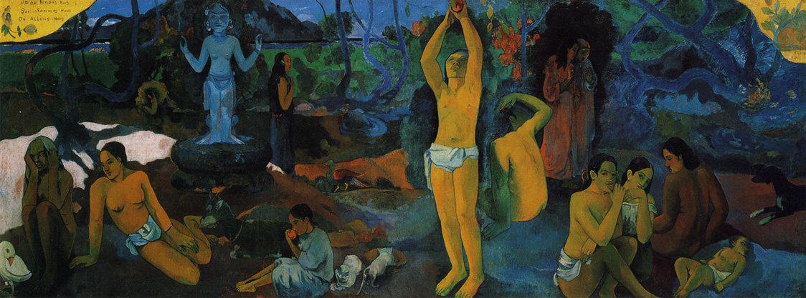

The Impressionist Revolution
impressionism
neo-impressionism
post-impressionism
Olympia
Édouard Manet - 1863
130.5cm × 190cm, oil on canvas
Musée d'Orsay, Paris
With Olympia, Manet reworked the traditional theme of the female nude, using a strong, uncompromising technique. Both the subject matter and its depiction explain the scandal caused by this painting at the 1865 Salon. The painting deviates from the academic canon in its style, characterised by broad, quick brushstrokes, studio lighting that eliminates mid-tones, large color surfaces and shallow depth. Instead of a smooth idealised nude, Manet painted a woman whose nakedness is starkly emphasised by the light.
Olympia
Édouard Manet
Impression,
soleil levant
Impression, Sunrise
Claude Monet - 1872
48cm × 63cm, oil on canvas
Musée Marmottan Monet, Paris
Widely regarded as Monet’s single most famous painting, when the painting was first shown to the public in the L’Exposition des Révoltés—an exhibition independent of the Salon that was organised by Monet, Bazille, Pissarro, and their friends. Many critics were extremely disapproving of the rebel group’s work, especially that of Monet. In the April issue of Le Charivari, a critic named Louis Leroy judgmentally entitled his article “Exhibition of the Impressionists”, thereby coining the term inspired by the title of Monet’s painting — Impression, Sunrise.
Impression, Sunrise
Claude Monet
Auguste Renoir
1841 – 1919
Frédéric Bazille
1841 – 1870
Bal du moulin de
la Galette
Dance at Le moulin de la Galette
Auguste Renoir - 1876
131cm × 175cm, oil on canvas
Musée d'Orsay, Paris
This painting is doubtless Renoir's most important work of the 1870s and was shown at the Impressionist exhibition in 1877. Though some of his friends appear in the picture, Renoir's main aim was to convey the vivacious and joyful atmosphere of this popular dance garden on the Butte Montmartre. The entire painting is a sea of happy faces, except for a man sitting on the right who seems to be in a pensive mood. Renoir has done a brilliant job on the effect of light on the scene. The light seems to flicker with life, yet it has dappled patches of shade and this adds to the lifelike nature and the quality of the painting.
Dance at Le moulin de la Galette
Auguste Renoir
Un dimanche après-midi à l'Île de la Grande Jatte
A Sunday Afternoon on the Island of La Grande Jatte
Georges Seurat - 1884
207.6cm × 308cm, oil on canvas
Art Institute of Chicago
Georges Seurat spent over two years painting A Sunday Afternoon, focusing meticulously on the landscape of the park. He reworked the original as well as completed numerous preliminary drawings and oil sketches. He would sit in the park and make numerous sketches of the various figures in order to perfect their form. Motivated by study in optical and colour theory, Seurat contrasted miniature dots of colours that, through optical unification, form a single hue in the viewer's eye. He believed that this form of painting, called divisionism at the time but now known as pointillism, would make the colours more brilliant and powerful than standard brush strokes.
A Sunday Afternoon on the Island of La Grande Jatte
Georges Seurat

Georges Seurat
1859 – 1891

De sterrennacht
The Starry Night
Vincent van Gogh - 1889
73.7cm × 92.1cm, oil on canvas
Museum of Modern Art,
New York City
From the moment of his arrival in Arles in February 1888, Van Gogh was constantly preoccupied with the representation of “night effects”. In April 1888, he wrote to his brother Theo: “I need a starry night with cypresses or maybe above a field of ripe wheat.” He first painted a corner of nocturnal sky in Cafe Terrace on the Place du Forum, Arles. Next came this view of the Rhône in which he marvellously transcribed the colours he perceived in the dark.
The Starry Night
Vincent van Gogh
Portrait d'Félix Fénéon, Opus 217
Portrait of Félix Fénéon, Opus 217
Paul Signac - 1890
92.5cm × 73.5cm, oil on canvas
Museum of Modern Art,
New York City
In this painting Signac portrays his friend Félix Fénéon, an influential French critic. Rather than literally depicting his appearance, Signac suggests his character, using line, colour, pattern, and pose to evoke Fénéon’s theatrical personality and creative energy. The title refers to the combination of sounds, lines, and colours that symbolist artists drew upon to convey the inner world of their subjects. In this portrait Signac captures the dynamic movement implied in his title by using a technique called pointillism.
Portrait of Félix Fénéon, Opus 217
Paul Signac
Vincent van Gogh
1853 – 1890

Where Do We Come From? What Are We? Where Are We Going?
Paul Gauguin
Baigneuses
Bathers
Paul Cézanne - 1905
127.2cm × 196.1cm, oil on canvas
National Gallery, London
With each version of the bathers, Cézanne moved away from the traditional presentation of paintings, intentionally creating works which would not appeal to the novice viewer. He did this in order to avoid fleeting fads and give a timeless quality to his work, and in so doing paved the way for future artists to disregard current trends and paint pieces which would appeal equally to all generations. The abstract nude females present in Bathers give the painting tension and density.It is exceptional among his work in symmetrical dimensions, with the adaption of the nude forms to the triangular pattern of the trees and river. Comparisons are also often made with the other famous group of nude women of the same period, Picasso's most renowned work Les Demoiselles d'Avignon.
Bathers
Paul Cézanne
1863
Manet's, anti-academic style as realised in Olympia, was rejected by the official Paris Salon and influential critics of the time.This resulted in the formation of the Salon des Réfuses in the same year, allowing avant-garde painters to express their rejected works.
1872
The movement gained its name after critic Leroy, reviewing the first major Impressionist exhibition, seized on the title of Monet's painting Impression, Sunrise, and satirised the group of painting nothing but impressions.Impressionism is considered the first distinctly modern movement in painting.
The impressionist technique
Reject academic principles in favour of representational art capturing sensory effects of a scene, painting en plein air.Capture the optical effects of light and convey the passage of time and changes in atmosphere as a fleeting moment.Darker shades replaced with intense colours using short, thick strokes that attributed to the unfinished aesthetic.
1876
While the painters exhibited together and formed a distinct group, Impressionism in sculpture was less well defined and their existence debated.Rodin's vigorous, spontaneous modelling and clear finger gestures are analogous to the impressionists' style of exaggerated and distressed brushwork.
1880
By this time, few of the original painters were working in a recognisably Impressionist manner.Because of the group's stylistic fragmentation, works by newer artists may still be referred to as Impressionism, despite their remoteness from Impressionist practice.
1884
Seurat’s most celebrated masterpiece, A Sunday Afternoon on the Island of La Grande Jatte took over two years to complete.Dominating the Société des Artistes Indépendants, Seurat's scientific approach to colour signalled the beginning of Neo-Impressionism.
Neo-impressionist aesthetics
Colours no longer mixed on the palette, but instead placed as small dots on the canvas so they mix in the viewers' eyes and appear more vivid than traditional brush strokes.Clear and well-defined contours around forms with luminescent surfaces that are carefully ordered and not random or spontaneous.Painted landscapes and contemporary life in the studio instead of painting outdoors as the impressionists did.
Divisionism & Pointillism
Neo-impressionists painters based their scientific approach from the colour theories of Michel Eugène Chevreul who developed the cercle chromatique.Divisionism developed along with another style, pointillism, which is defined specifically by the use of dots of paint and does not necessarily focus on the separation of colours.
1888
Meanwhile, van Gogh and Gauguin shared a small apartment in Arles, France, and in the process forged an unsteady, but mutually constructive relationship.They experimented with new approaches to painting, rejecting existing approaches to interpret form, colour and lighting, and led to the rise of Post-Impressionism.
1891
Following the early death of Seurat, were it not for Signac, Neo-Impressionism might have lost all momentum following the untimely tragedy.They continued to expand over the next decade with an even more distinctive characteristic. Incorporation of political ideas, especially anarchism, started showing prominence.
The post-impressionist style
Vivid and unnatural colours with thick application of paint on canvas leaving the brush or knife strokes visible.Emphasis on geometric forms with unrealistic distortion of objects, figures and perspective for an expressive effect.Abandon journalistic intentions from the previous movements while focussing on real life subject matter.
1897
Under the influence of folk art and Japanese prints, Gauguin's work evolved towards Cloisonnism, a style of post-impressionist painting with bold and flat forms separated by dark contours. The cloisonnist separation of colours reflects an appreciation for discontinuity that is characteristic of Modernism.
1906
At the time of Cézanne's death, one of the master-pieces of modern art, Bathers, remained unfinished after seven years of work. Cézanne can be said to form the bridge to the next century's art movements such as Cubism.Cézanne's work demonstrates a mastery of design, colour and composition, and his brushstrokes are clearly recognizable. Both Matisse and Picasso are said to have remarked that Cézanne was simply the father of them all.
1914
The declarations of the World War marked a major break in European cultural history. However, the Impressionist movements as a whole had far-reaching effects. Painters who began as impressionists developed other techniques, which started new movements in art such as Fauvism, Expressionism, Cubism among many others.Today, in any gallery, the Impressionist galleries draw masses of visitors who respond to the spontaneity and the enjoyment with which Impressionists depicted their world.

{kind=link}
{kind=link}
{kind=link}
{kind=link}
{kind=link}
{kind=link}